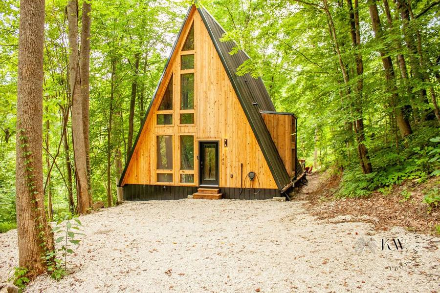

Home / Herrington Lake / Herrington Haven
HARRODSBURG · HERRINGTON LAKE
Home / Herrington Lake / Herrington Haven
HARRODSBURG · HERRINGTON LAKE
A three-story lake house right on Herrington Lake with a private dock and boat slip, sunrise views from the deck, a fire pit on the lawn, a hot tub and a game room with a pool table. Room for 10 to spread out.
Good to know: Steps down to the dock are steep and narrow.
On Herrington Lake near Harrodsburg
For your privacy and ours, the exact address and arrival directions are sent after you book.
Self check-in with a personal door code provided for your stay. Check-in is 3:00 pm.
Lock the doors, put trash in the bins by the driveway, turn off the lights and set the AC to 72. Checkout is 10:00 am.
A private trail of about 65 steps leads down to your dock. It is sloped and steep in places, so wear good shoes.
Yes. The home has a private boat slip at the dock.
The private driveway fits up to 3 vehicles.
Not at this time.
There’s a main thermostat, and the wall-mounted units in the rooms run on their own remotes, so everyone can set their room the way they like it.
Cancel at least 30 days before check-in for a full refund. Cancel 7 to 30 days before check-in and 50% of the nightly total is refunded. Cancellations less than 7 days before check-in are non-refundable.
“Beautiful lake home with great views, comfortable accommodations and plenty of things to do if you want to just stay at the house. Pool table, fire pit, hot tub, games, TV's and more. Loved our stay!”
“Loved staying here. The house is amazing and the view is fabulous. Loved spending time on the chaise lounges at the dock. We had a very relaxing time. Beds are super comfy.”
“What a gem! Our family of five had a lovely time! Very clean, linens were fresh, and private dock was amazing! The location on Herrington was beautiful, and clean.”
MORE KENTUCKY STAYS
 Red River Gorge
Red River GorgeStanton · Red River Gorge
Hot tub · game room · arcade · sleeps 8
View home → Red River Gorge
Red River GorgeRosslyn · Red River Gorge
Private hot tub · big windows · sleeps 5
View home →
Red River GorgeRosslyn · Red River Gorge
Sunken hot tub · shuffleboard · sleeps 6
View home →BOOK DIRECT PERK
Book on our site and get a complimentary early check-in or late checkout, up to 2 hours, when available. Same homes, same hosts, always a lower price than Airbnb or Vrbo.